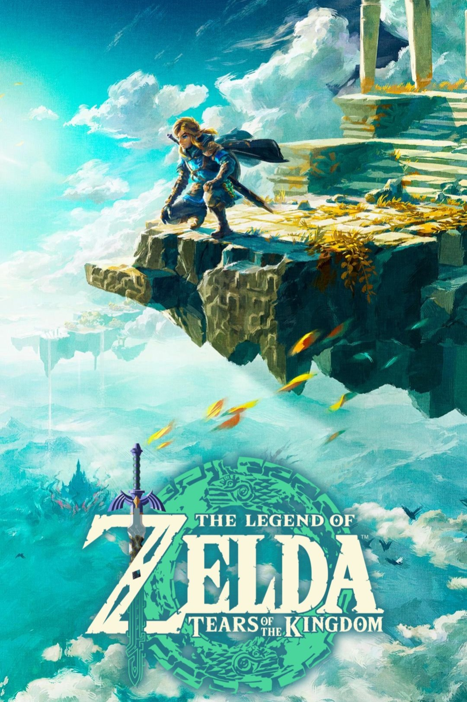
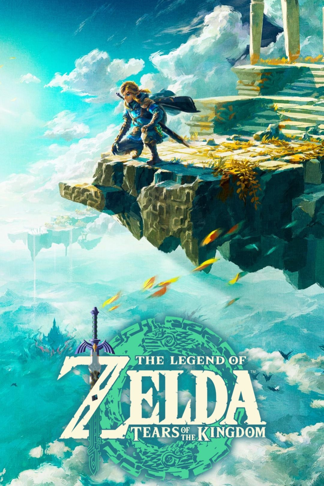
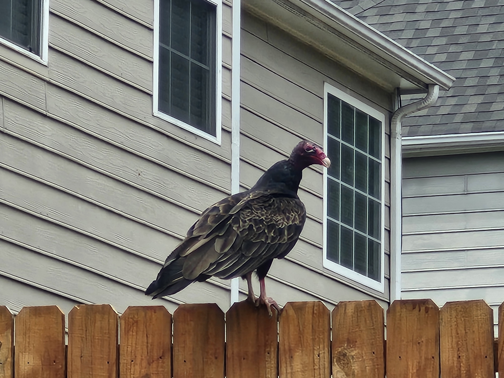
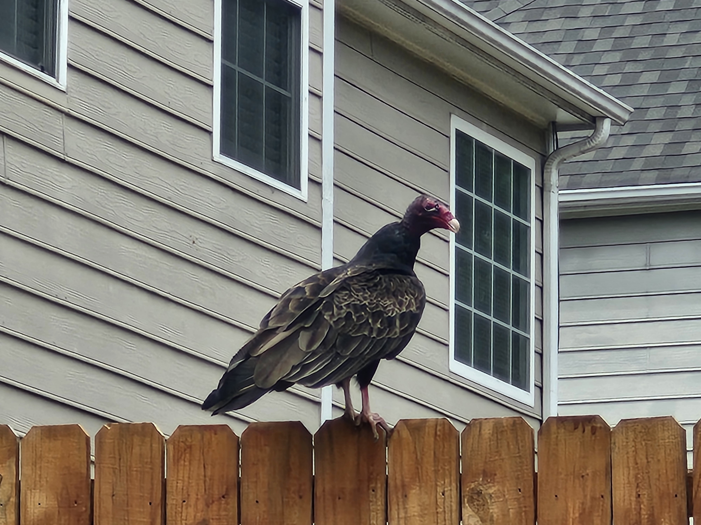

Gaming

 

I've loved playing video games for longer than I can even remember. Ever since my very
first gaming system, the 3ds, my interest with this pastime has hardly waned over the
years. I intend to make my own game one day as part of a passion project. Out of the
countless games I've played, a few have managed to stick out to me for being particularly
excellent, and I could talk about them for days. See some of my personal favorite titles
above.
Nature
 

I adore anything outdoors and related to animals! I enjoy taking walks on trails or even just
around my neighborhood, but I like going out into nature and exploring even more! I'm
always up for a hike up a mountain or a campout in the woods. My reverence for nature
led me to join the Boy Scouts troop of New Canaan, which hosts plenty of outdoor-centric
events. I also love the animals which inhabit the natural world as much as the world itself.
See a picture of a turkey vulture I spotted while walking around my neighborhood above.
Music


I've recentely started developing a deeper interest in music. My favorite genres are
hip-hop and jazz, though I do also tend to listen to video game music of various genres
as well. My favorite album is Late Registration by Kanye West, and my favorite musical
artist is Tyler, the Creator, though MF DOOM comes in as a close second place. I want
to start learning more about music production to see if I enjoy it enough to make creating
music a new hobby.
Art

I love art and all of the diverse mediums in which it can be represented. I find it so
fascinating how it can allow people to share complex ideas and stories with one another
while negating a language barrier. I'd say that my favorite medium would be visual arts;
that being paintings, drawings, sculptures, etc. I took a photoshop class as one my
electives as a freshman, and that allowed me to create various pieces of digital art,
which you can see above.